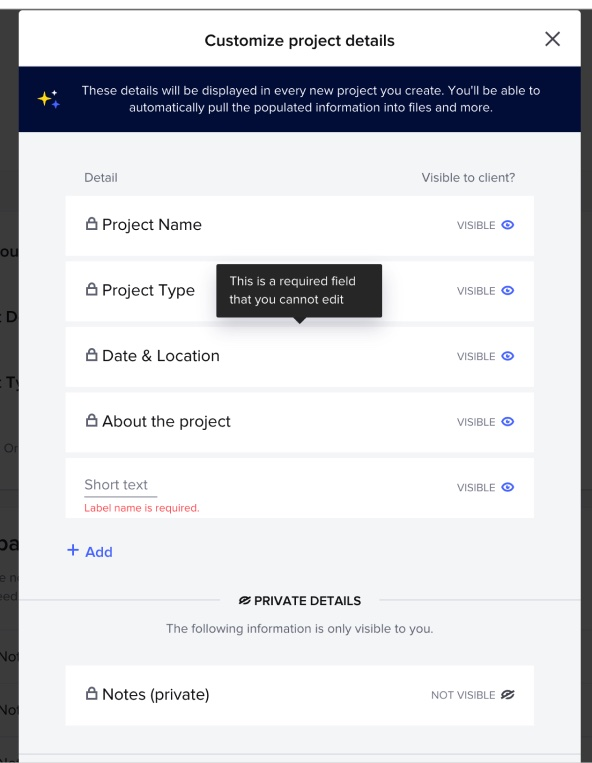
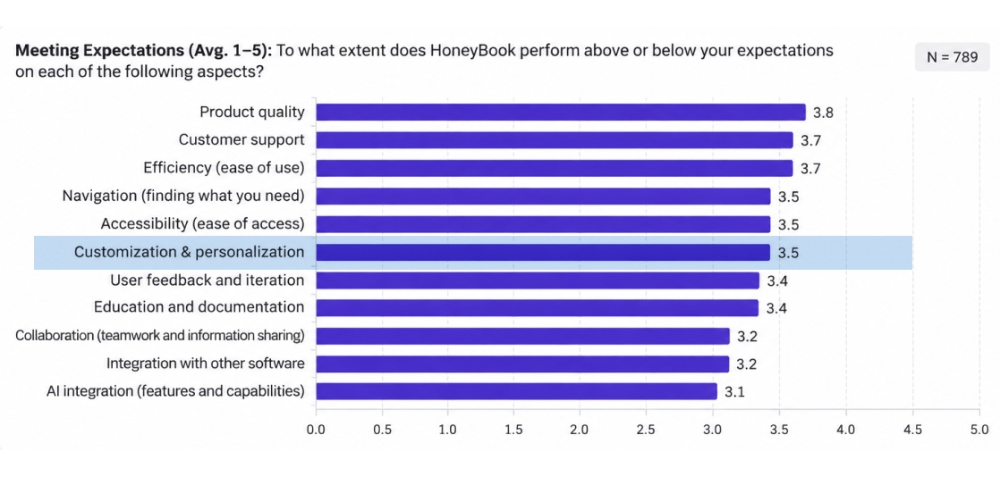
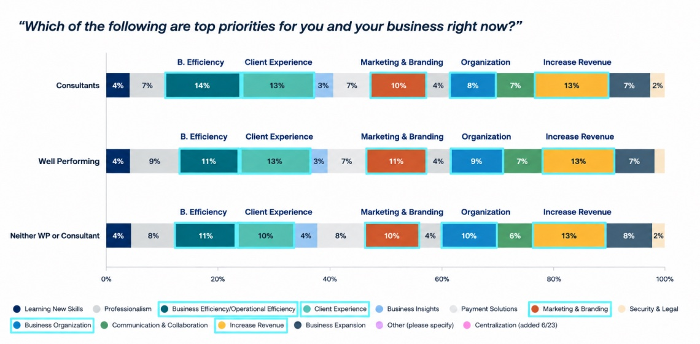
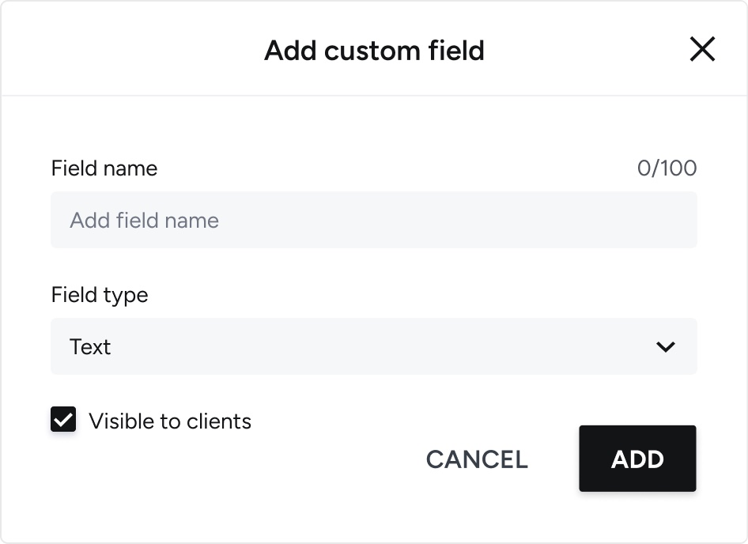
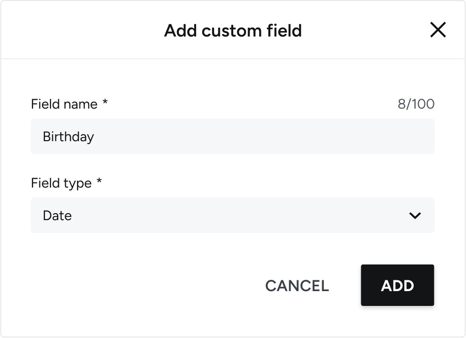
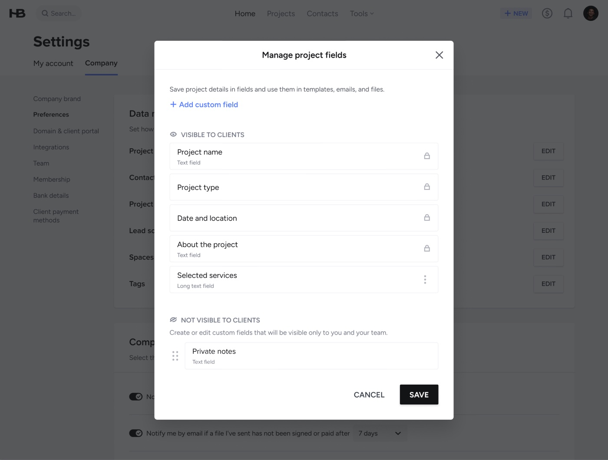
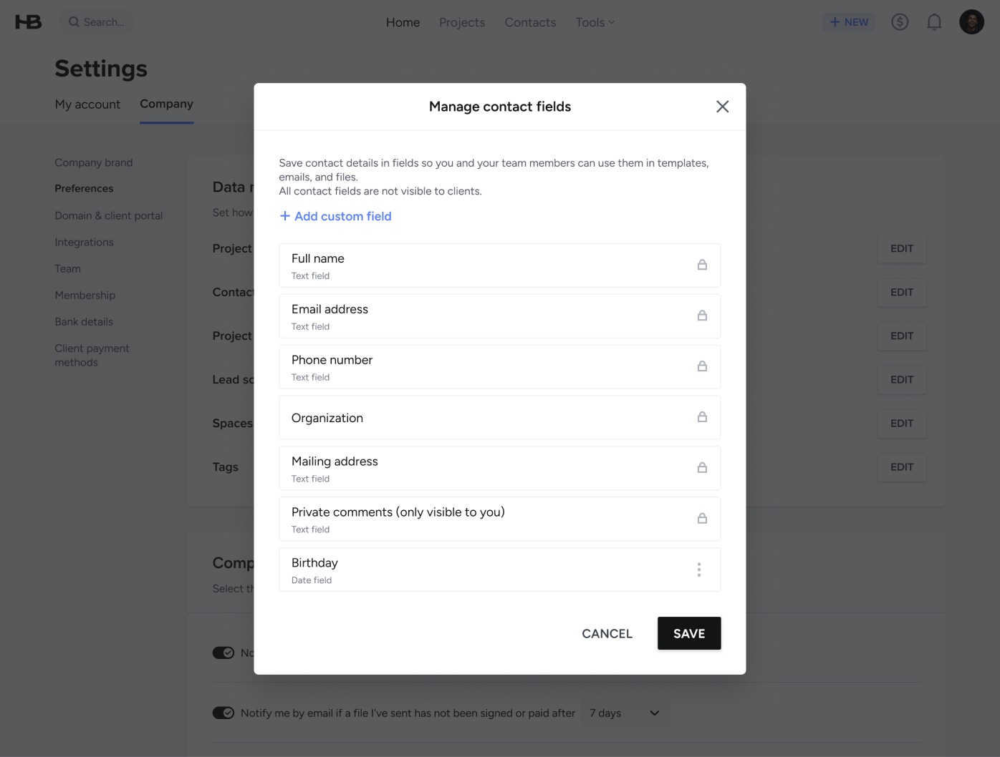
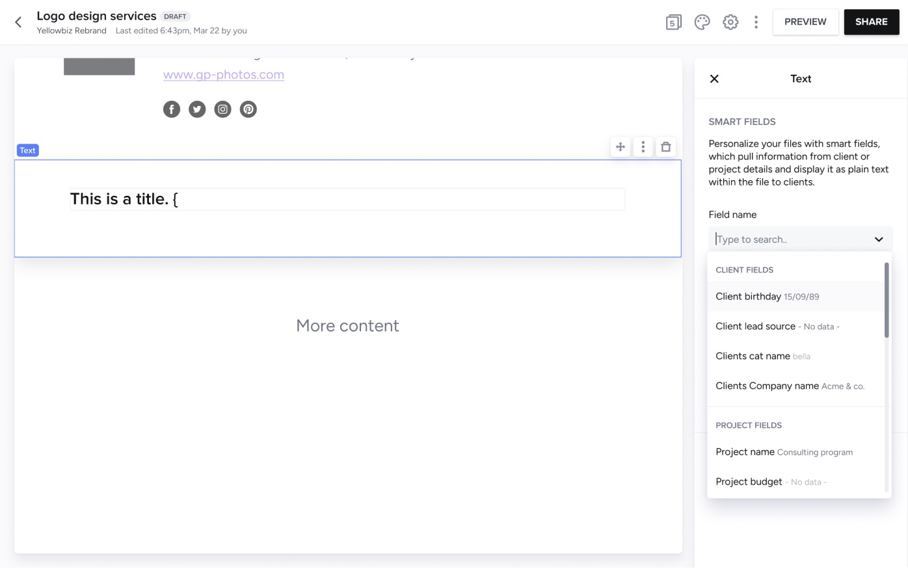
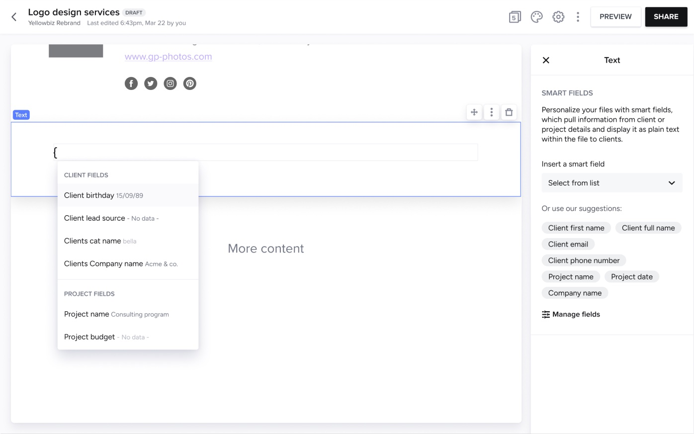
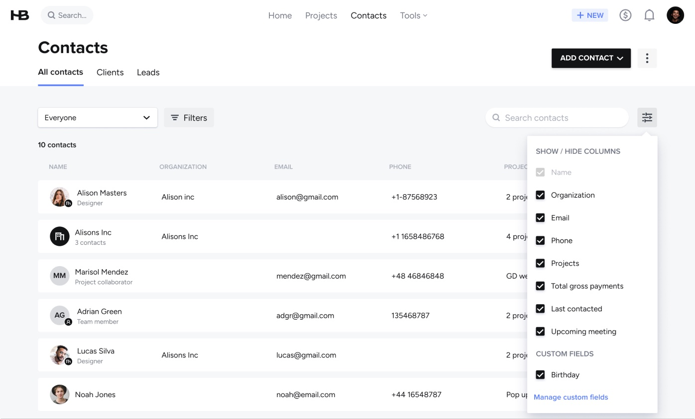

HONEYBOOK · DATA · 2023
How do you let every business add the details unique to their work, keep them easy to find and use, without overcomplicating the product?
CONTEXT
No two service businesses track the same things. A photographer cares about shoot locations; a coach about session counts. HoneyBook’s project and contact records were mostly fixed: a handful of locked default fields, plus a generic short-text slot on projects, and nothing custom at all on contacts. Everything else went into notes and manual workarounds, and the same gap kept surfacing independently across users: requests to track referrals and important dates, to build fully custom field mappings, to decide which fields are visible to their client, and simply to add more fields to a client record.
The challenge wasn’t just adding fields: it was making them work everywhere users would need, making them easy to find, and doing it while keeping the product simple for people who don't need them.

Before: “Customize project details” had a few locked default fields and one field type (short text), with no way to control visibility: every field except “Notes” was visible to clients.
MOTIVATION
Our team’s objective at the time was to improve user satisfaction, and “customization and control” had surfaced as a product gap and a source of dissatisfaction.
There is more than one way to improve customization. We chose this direction for three reasons: users were explicitly asking for it, it had been on the roadmap before (and was dropped in an earlier round of prioritization), and it was a relatively easy win, improving an existing capability rather than adding new features on top of weak existing ones.
DATA & INSIGHTS
The case for the feature came from user research that predated it. In a survey of 789 users asked how HoneyBook performed against their expectations, customization and personalization scored 3.5 out of 5: below product quality, support and ease of use, and level with navigation. Users were rating the product well on doing the job, and worse on letting them do it their way. This was joined by voices from the user community, with specific requests around fields. The workarounds for tracking data on contacts were the private notes area, which is plain text, or the Notes feature, which can’t be referenced from other parts of the product.

Survey question: “to what extent does HoneyBook perform above or below your expectations?” customization and personalization scored at 3.5/5.

Top business priorities by segment. Efficiency and organization, the two jobs custom fields serve, rank in the top five for every segment.
FRAMING THE SCOPE
The scope included custom fields on projects and contacts, up to 25 per entity, each with a name and a type. We chose 25 after reviewing how many fields users already had, counting only repeating fields, and planned to track usage after release and adjust. (After community feedback, we raised it to 50.) Fields can be used as smart fields in contracts, text blocks and emails, and filled in automatically from a questionnaire. That is a large surface, so the first job was deciding what the first release had to contain to be useful, and what could wait. The first version had five field types:
Two more field types, single-select and multi-select, were planned but moved to V2. Both let users pick from a reusable list they define, such as venue names or paper types. Those lists needed their own management (adding, editing, reordering and deleting values already in use), which would have doubled the dev effort, and text fields could cover the need until V2 was prioritized.
Field visibility
Visibility to clients only matters for project fields: Project fields hold details about a specific project and can be shown to the client in the portal; contact fields store information about the client and are never shown to them. So the contact modal drops the visible/hidden split entirely.
Location in the product
Managing fields is an admin job. Creating, renaming and deleting fields sits behind admin permissions in company settings, not inside each project.
DESIGN DECISIONS
Every field needed rules for after creation, since client data doesn’t stay static. A renamed field updates everywhere it’s already in use rather than breaking silently. A field’s type locks once created, so a date field can’t quietly become a text field under existing data. Deleting a field clears it from the list but keeps the values already saved on projects, since removing a field shouldn’t mean losing a client’s history.
Default fields, like project name, project type, and date and location, ship locked, so the 25-field cap is headroom for what’s actually custom, not a ceiling users hit right away.
Adding a field meant a small, focused decision: name it, then pick a type scoped to what the data actually needs, not a blank spreadsheet cell.


How adding a field works: you name it and pick a type. For project fields, you also set visibility.
The fields are sorted into two sections, visible and not visible, so you can see at a glance what the client can and can't see.
To pressure-test custom fields against a real-life scenario, here is an example project for a user who makes cakes for parties.
These fields can be collected with a questionnaire, and later tracked in the project and used in contracts, text blocks and emails.
WHAT SHIPPED
Two settings modals, one per entity (Project / contact), in company settings under Preferences.
Both list the locked defaults with their type.
Only the project modal carries the visible / not visible split, because only project fields are ever visible to clients.

Manage project fields: Users can add, edit and delete fields, but can't change the default system fields that other features depend on.

Manage contact fields: same as project fields, except there's no visibility split, since contact fields are always private.
Once created, a field shows up empty on every project or contact, in the project Details tab and the contact record, and in the smart-field list in contracts, text blocks and the email composer, so the data users capture is usable where they write.
Discoverability came from putting fields where users already work rather than adding a new destination: “New” tags on Project fields and Contact fields in settings, a field list inside the smart-field menu (opened from the side menu or by typing { in a text block), and a “Custom fields” group in the contacts table’s column picker, with a link back to manage them.


How using a field works: in a text block, add the field from the side panel or type { to open the field list.

Custom fields also appear as optional columns in the contacts table, grouped under “Custom fields”, with a link to manage them.
ROLLOUT
The feature rolled out in stages, first to 30% of users, then a second milestone to another 30%, before opening to everyone, so edge cases like the delete-but-keep-history behavior surfaced before every user had it. For example, a request for more than 25 fields came up a few times, so we raised the limit to 50.
OUTCOME
Shipped a custom-fields system that scales from a solo freelancer to a growing team without overwhelming either: users who never open the settings see nothing new, and users who need it get typed, customizable data that follows them into files and emails.
A few months later, prompted by community requests, another team released a V2 with single-select, multi-select and reordering.
Figures as of the end of the rollout test.
LOOKING BACK
We started with a conservative cap of 25 fields per entity. Raising it was an easy fix once we saw it had to change, and it showed the value of saving resources for post-release iterations and of rolling out gradually. Designing the next steps early (reordering, selection types) also paid off: it paved the way for the next iterations.